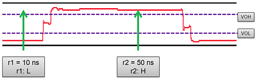
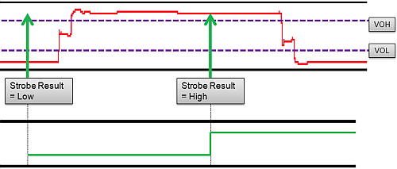
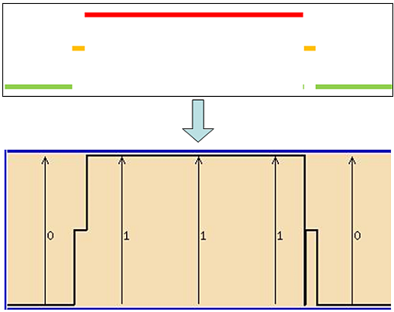
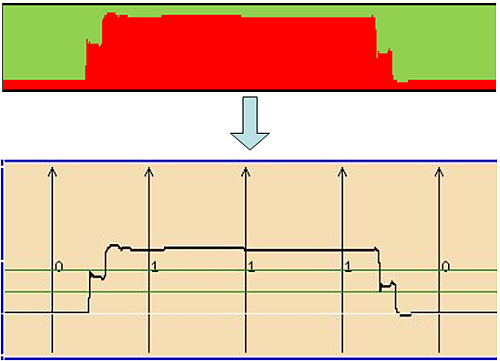

Comparing resolution modes of the Timing Diagram
This topic compares the resolution modes of the Timing Diagram Tool based on a wavetable example.
To compare the output of the resolution modes, the following example is used:
In a wavetable setup, a cycle has two receive edge strobes:
- r1 at 10ns
- r2 at 50 ns

For the given signal (red), r1 is comparing to L and r2 is comparing to H.
Displaying with Standard Size
The standard view displays the expected low and high lines.

Displaying with Double Size
In this example, the high resolution view was reconstructed from 800 points, across 10 cycles.

Displaying with Scope Size
In this example, the softscope function view was reconstructed from 35 VOL levels, with 800 pts across 10 cycles each.

Functional changes
- Introduced before SmarTest 6.3.2